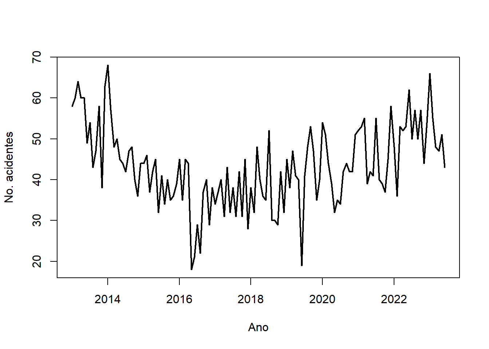
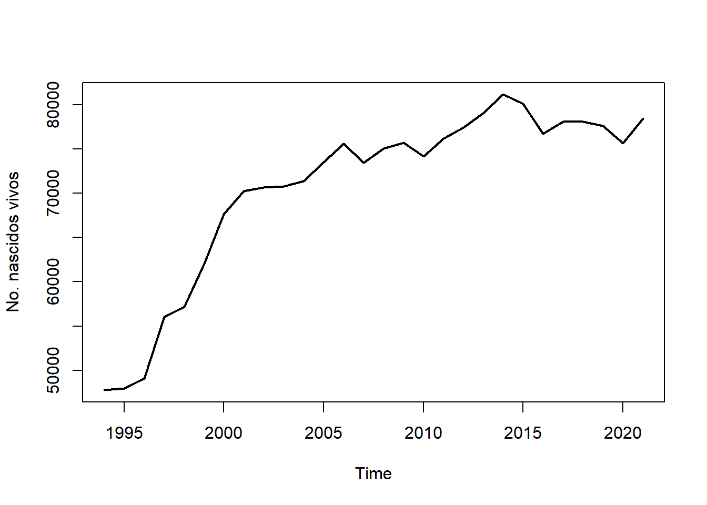
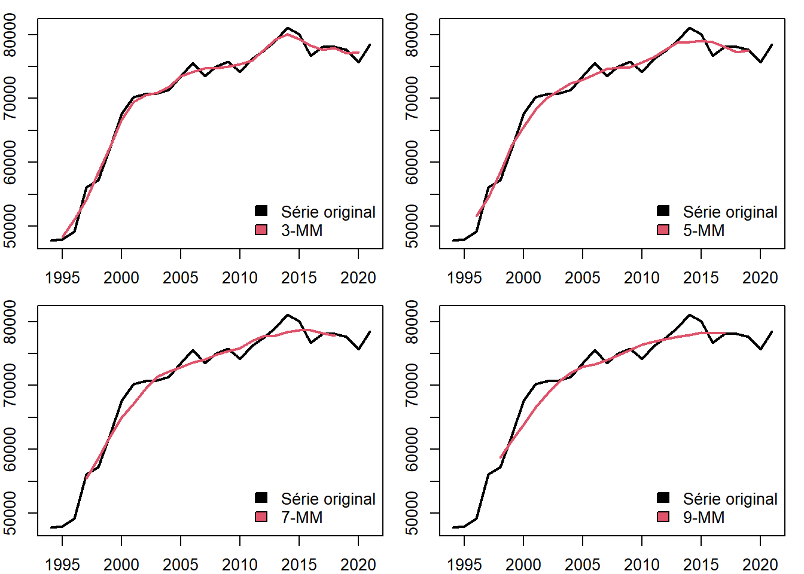
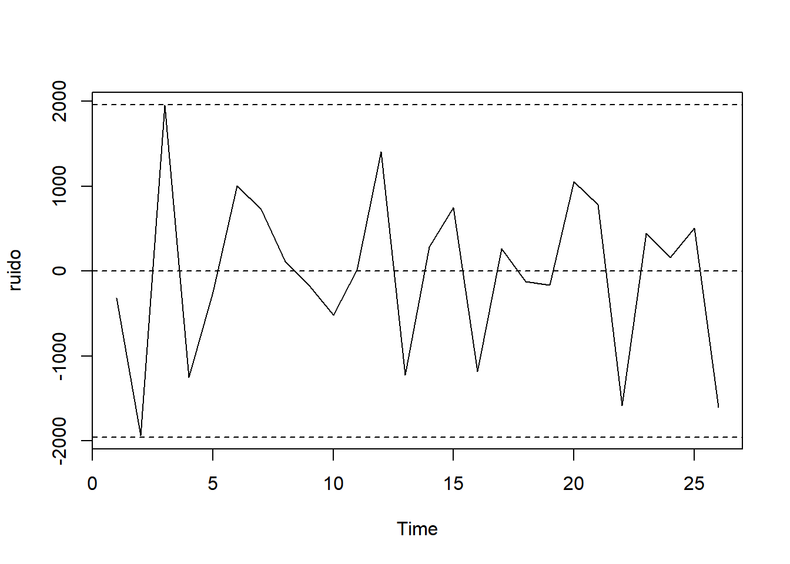
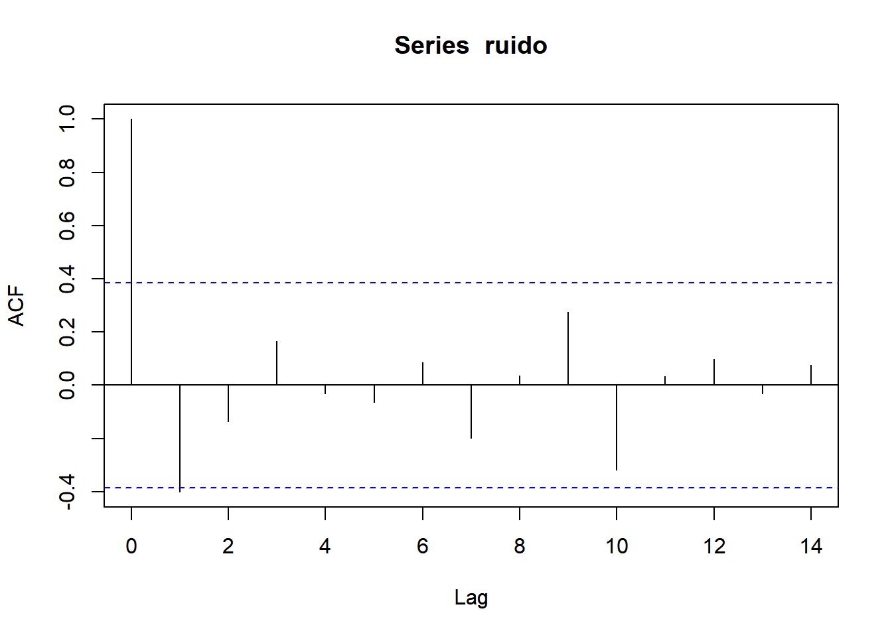
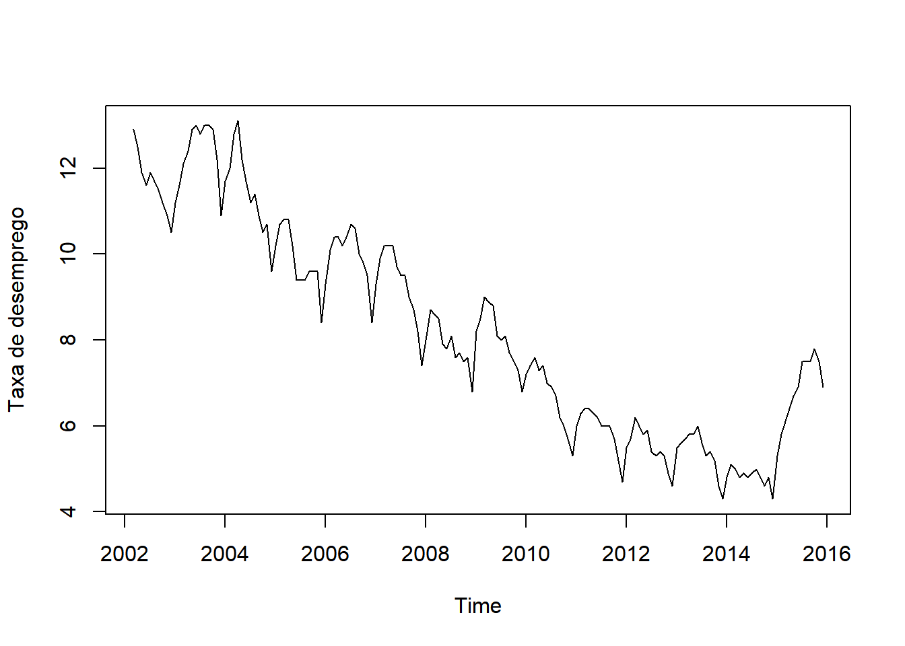
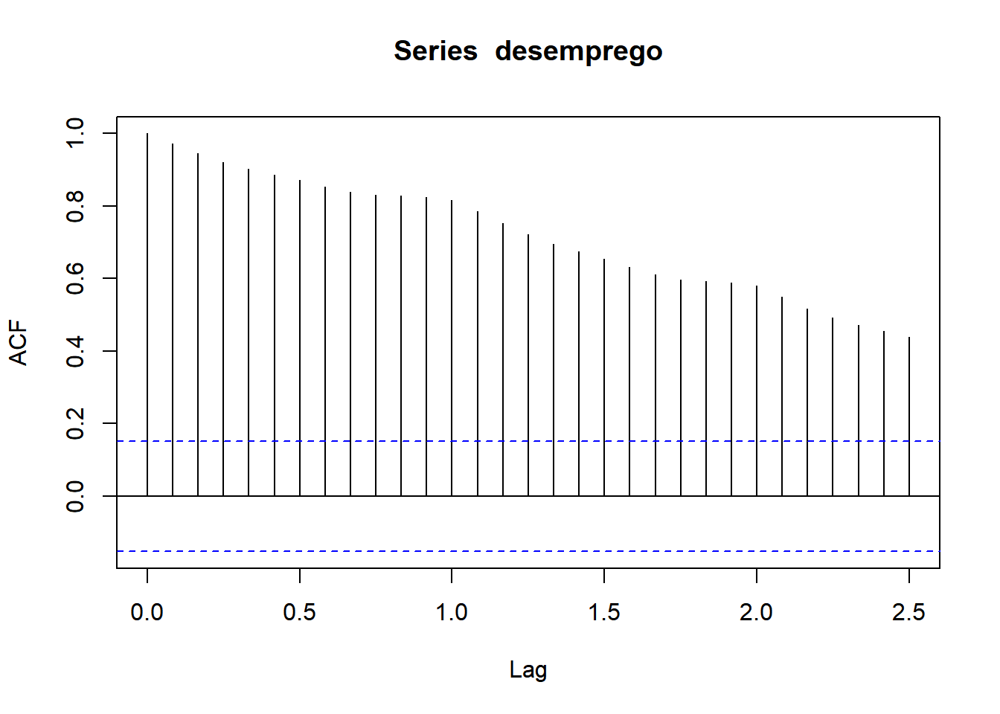
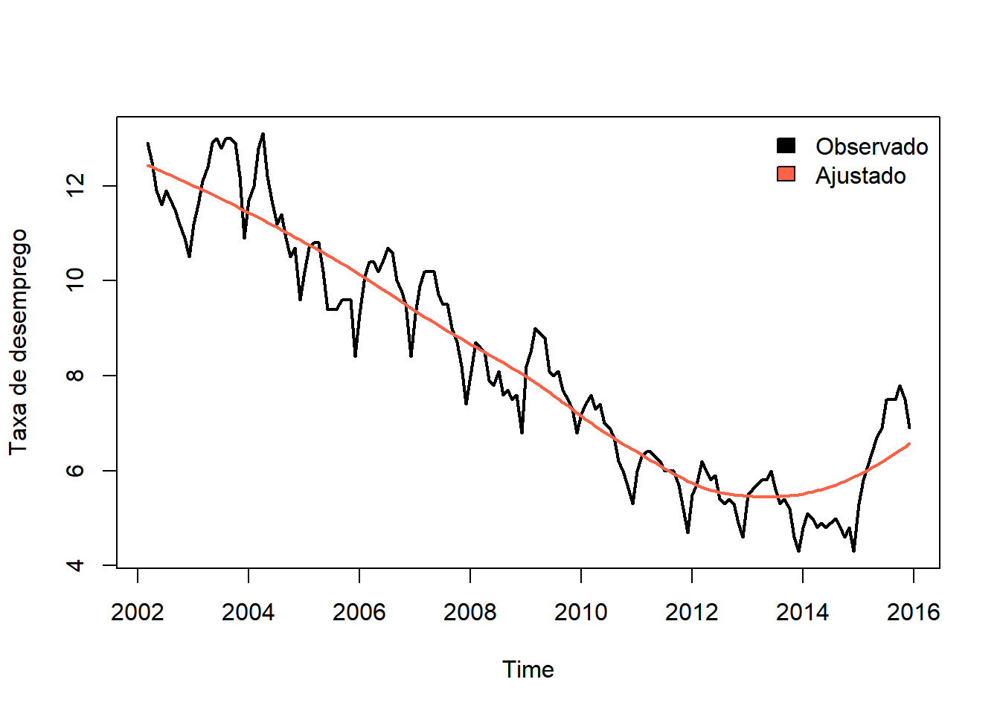
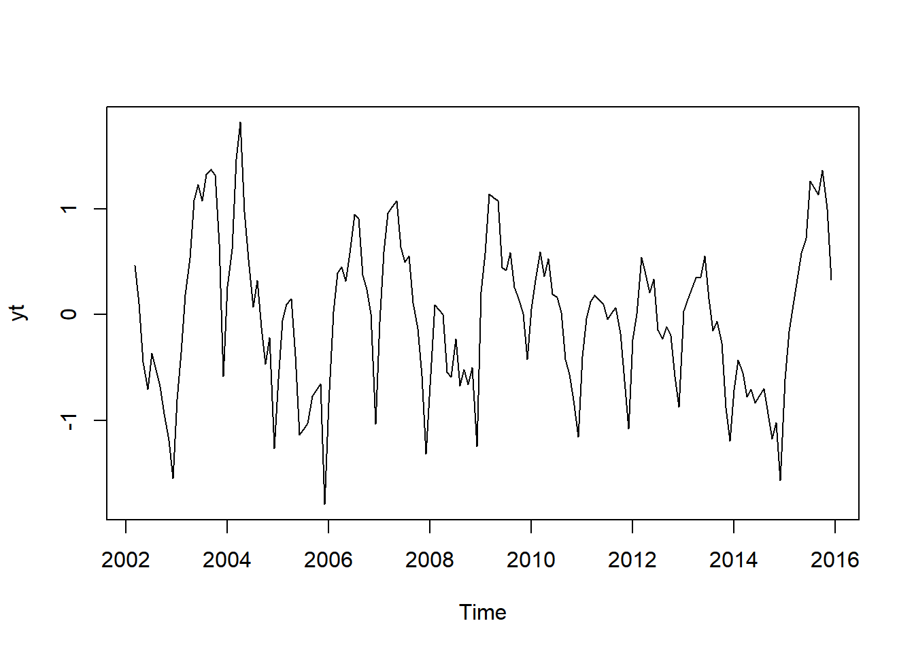

set.seed(1)
x = 0
for( t in 2:100) x[t] = x[t - 1] + rnorm(1,0,1)
ts.plot(x, lwd = 2)6 Tendência
6.1 O que é tendência?
Diz-se que uma série temporal observada possui tendência quando ela exibe um padrão de crescimento ou decrescimento em médio/longo prazo.
A Figure fig-fabMes mostra a série do número mensal de acidentes com aeronaves, construída através dos dados diários mantidos pela Força Aérea Brasileira. Note uma tendência de decrescimento na série até meados de 2016, substituída então por uma tendência de crescimento.
url <- 'https://www.dropbox.com/scl/fi/kq4jwbovu94u857238sus/N-mensal-de-acidentes-com-aeronaves-2013jan.csv?rlkey=n5pa45e7ht33houmiawdkjb09&dl=1'
x <- read.csv(url, h = T)
acidentesFAB <- ts( x, start = c(2013,1), frequency=12)
ts.plot(acidentesFAB, lwd = 2, xlab = 'Ano', ylab = 'No. acidentes')
6.2 Tendência aletória e tendência determinística
A tendência pode ser duas naturezas: determinística ou aleatória.
A tendência aleatória é construída ao acaso. Considere, por exemplo, o passeio aleatório definido por \(x_0=0\) e \(x_t = x_{t-1}+\varepsilon_t\), onde \(\varepsilon_t\) é um ruído branco gaussiano com \(\nu=1\). Já foi mostrado que \(E(x_t)=0\) e \(Var(x_t)=t\). A figura abaixo apresenta uma série simulada desse processo.
Observe que a série exibe um tendência, mas não há qualquer explicação para a sua exsitência, uma vez que este comportamento é fruto do acaso. Ainda, teremos que \(E(x_t)=0\), o que torna o padrão observado irrelevante.
Na tendência determinística, há uma função T(.) que determina seu comportamento. Nesse caso, é assumido que
\[y_t = T(t) + \varepsilon_t,\] onde \(\varepsilon_t\) é uma série estacionária com média \(0\) e variância \(\nu\). Deste modo, \(E(y_t)=T(t)\), o que implica que \(T(.)\) representa o comportamento médio da série. O problema de estimar \(T(.)\) é denominado suavização.
Na prática, é impossível determinar se uma tendência é aleatória ou determinística, cabendo ao estastístico procurar se há motivos para acreditar que está analisando o segundo tipo. A partir deste momento, toda tendência será considerada determinística.
6.3 O modelo de tendência polinomial
Considere que a série temporal foi observada até o tempo \(s\). Então, a tendência é definida como uma função \(T:(0,t]\rightarrow \mathbb{R}\). O Teorema de Weierstrass afirma que, se \(T\) é contínua, então para qualquer \(\delta>0\), existe um polinômio \(u(.)\) tal que \[|T(t)-u(t)|<\delta.\] Isto quer dizer que \(T(.)\) sempre pode ser aproximada por um polinômio. Assim, para determinada ordem \(p\), é correto afirmar que
\[\begin{equation}
y_t = \beta_0 + \sum_{j=1}^p \beta_j t^j + \varepsilon_t
\end{equation}\] onde \(\varepsilon_t\) é uma série estacionária, é um modelo razoável para uma série temporal com tendência. Assumindo que \(\varepsilon_t\) é um ruído branco gaussiano, tem-se o modelo de tendência polinomial de grau \(p\).
Fazendo \(\boldsymbol{f}_t'=(1,t,\ldots,t^p)\) , o modelo de tendência polinomial é reescrito como \[\boldsymbol{y}=\boldsymbol{F}'\boldsymbol{\beta}+\boldsymbol{\varepsilon}\] e inferências sobre \(\boldsymbol{\beta}\) e \(\nu\) são feitas utilizando o modelo linear tradicional.
Example 6.1 Considere o número anual de nascidos vivos no estado do Amazonas entre os anos 2000 e 20013:
x <- c( 67646 , 70252 , 70671 , 70751 , 71345 ,
73488 , 75584 , 73469 , 75030 , 75729 ,
74188 , 76202 , 77434 , 79041)
nascidos <- ts(x, start =2000)ts.plot(nascidos, lwd = 2, ylab = 'No. nascidos vivos')
stats::acf(nascidos)Vamos ajustar um modelo de tendência polinomial de ordem 1, ou seja
\[y_t=\beta_0+\beta_1 t + \varepsilon_t\] onde \(t=1,\ldots,14\) representa os tempos \(2000,\ldots,2013\).
tempo <- 1:14
mod <- lm( nascidos ~ poly(tempo, 1, raw = TRUE))As estimativas de máxima verossimilhança para \(\beta_0\) e \(\beta_1\) são:
mod$coefficients (Intercept) poly(tempo, 1, raw = TRUE)
68266.879 715.178 ou seja, \[\hat{T}(t)=\hat{\beta}+\hat{\beta}_1 t = 68.267+715 t\] Os resíduos do modelo linear mod podem ser obtidos via função residuals. Abaixo, verificamos que a série dos resíduos oscila em torno de zero e que nenhuma autocorrelação parece ser relevante, o que dão indícios de que os erros são um ruído branco.
res <- residuals(mod)
ts.plot( res, main = '')
acf(res, main = '')Abaixo, o teste de Shapiro-Wilks não gera evidências contra a suposição de normalidade e o teste de Box-Pierce não gera evidências contra a hipótese de ruído branco.
shapiro.test(res)
Shapiro-Wilk normality test
data: res
W = 0.96982, p-value = 0.8743Box.test(res)
Box-Pierce test
data: res
X-squared = 0.02156, df = 1, p-value = 0.8833É interessante notar que, para \(t=1,\ldots,14\), \[\hat{T}(t)=\hat{\beta}_0+\hat{\beta}_1 t = \hat{y}_t,\] logo, os valores preditos do modelo são uma estimativa para a tendência nos pontos observados.
ts.plot( cbind( nascidos, fitted(mod)), col = 1:2, lwd = 2)6.3.1 Previsão
A previsão é realizada utilizando o modelo ajustado, estrapolando para um tempo não observado. Por exemplo a estimativa para 2014 (\(t=15\)) é
\[\hat{T}(15)=\hat{\beta}+\hat{\beta}_1 15 = 78.992\] (o valor real foi 81.145).
É importante ressaltar que esse tipo de modelo é interessante para fazer inferências sobre a tendência, mas pode ser inadequado para previsões, uma vez que o polinômio é uma aproximação apenas para o intervalo observado.
6.3.2 Seleção de modelos lineares
O valor do Critério de Informação de Akaike (AIC) é dado por \(-2L(\hat{\theta})+2k\) onde \(L\) é a função de verossimilhança e \(\hat{\theta}\) e \(k\) são o estimador de máxima verossimilhança para \(\theta\) e sua dimensão, respectivamente. O modelo com menor AIC é considerado mais adequado.
Considere o nível anual, em pés, do Lago Huron. Essa série já vem carregada no R sob o nome LakeHuron.
ts.plot(LakeHuron, lwd = 2, ylab = 'Nível (pés)')
stats::acf(LakeHuron)Vamos ajustar alguns modelos para tentar explica a tendêndia dessa série.
tempo <- 1 : length(LakeHuron)
mod1 <- lm( LakeHuron ~ poly(tempo, 1, raw = T))
mod2 <- lm( LakeHuron ~ poly(tempo, 2, raw = T))
mod3 <- lm( LakeHuron ~ poly(tempo, 3, raw = T))
mod4 <- lm( LakeHuron ~ poly(tempo, 4, raw = T))
mod5 <- lm( LakeHuron ~ poly(tempo, 5, raw = T))
mod6 <- lm( LakeHuron ~ poly(tempo, 6, raw = T))
AIC(mod1)[1] 306.0957AIC(mod2)[1] 287.8407AIC(mod3)[1] 289.8391AIC(mod4)[1] 291.7127AIC(mod5)[1] 293.475AIC(mod6)[1] 291.7054Entre os modelos ajustados, o de ordem 2 foi aquele com o menor valor do AIC. Sua tendência estimada é
O polinômio ajustado foi \[\hat{T}(t) = 581 -0,091 t + 0,001 t^2\]
Abaixo, apresentamos a análise de resíduos desse modelo.
res <- residuals(mod2)
ts.plot( res, main = '')
abline(h = 0, lty = 2)
acf(res, main = '')Os resíduos parecem oscilar em torno de zero com um variância constante, mas o correlograma sugere que não temos um ruído branco. O teste de Box-Pierce, dado abaixo, confirma a nossa suspeita. Deste modo, este modelo não é adequado.
Box.test(res)
Box-Pierce test
data: res
X-squared = 50.973, df = 1, p-value = 9.365e-136.4 Métodos não paramétricos para estimação da tendência
O modelo de tendência polinomial é robusto quando relaxamos a necessidade do ruído branco ser gaussiano. Nesse sentido, as estimativas ainda são válidas, mas perdemos todos os testes de hipóteses.
Os métodos não paramétricos independem da distribuição do ruído, sendo úteis para a análise exploratória.
6.4.1 Médias Móveis
O método das médias móveis consiste em obter \(\hat{T}(t)\) através da média da série considerando os valores vizinhos à \(y_t\). Para o tempo \(t\) e \(m=2h+1\), com \(h=1,2,\ldots\), considere o conjunto \(\mathcal{V}(m)_t=\{t-h,\ldots,t+h\}\). Defini-se a média móvel de ordem \(m\) (notamção \(m\)-MM) como \[\hat{T}_h(t)=\frac{1}{m}\sum_{ i = t-h}^{t+h}y_i,\;h<t<n-h\].
Para compreender melhor esse estimador, considere que a relação entre pontos vizinhos é aproximadamente linear, ou seja, para qualquer \(t\in\mathcal{V}(m)_t\) existem \(a_\mathcal{V}\) e \(b_\mathcal{V}\) tais que \[y_t\approx a_\mathcal{V}+b_\mathcal{V}t+\varepsilon_t,\] onde \(\varepsilon_t\) é considerado uma série temporal estacionária e ergódica. Então \[\begin{align}E(\hat{T}(t))&=\frac{a_\mathcal{V}+b_\mathcal{V}(t-h)+\cdots+a_\mathcal{V}+b_\mathcal{V}t+\cdots+a_\mathcal{V}+b_\mathcal{V}(t+h)}{m}\\&=a_\mathcal{V}+b_\mathcal{V}t\end{align}\] \[Var(\hat{T}(t))=\frac{\nu}{m}+\frac{2}{m}\sum_{j=1}^{2h}j\gamma(j)\] Observe que, como \(T(.)\) é determinística e os ruídos são estacionários e ergódicos, então \(Var(\hat{T}(t))\) converge para zero quando \(m\rightarrow \infty\). Contudo, \(T(.)\) é localmente linear, logo \(\hat{T}\) é um estimador razoável para valores baixos de \(h\). Este é um exemplo típico de trade off entre víes e variância, onde não é possível minimizar os dois simultaneamente.
Utilizaremos a função ma(x,m), do pacote forecast para encontrar \(m-\)MM para a série `x
Example 6.2 Abaixo, apresentamos a série anual histórica de nascidos vivos no Amazonas desde 1994 até 2021.
x <- c(47780, 47966, 49112, 56070, 57180, 62037,
67646, 70252, 70671, 70751, 71345, 73488, 75584,
73469, 75030, 75729, 74188, 76202, 77434, 79041,
81145, 80097, 76703, 78066, 78087, 77622, 75635,
78454)
nascidos <- ts(x, start =1994)
ts.plot(nascidos, lwd = 2, ylab = 'No. nascidos vivos')
require(forecast)Carregando pacotes exigidos: forecastWarning: package 'forecast' was built under R version 4.3.1Registered S3 method overwritten by 'quantmod':
method from
as.zoo.data.frame zoo oo <- par( mfrow = c(2,2), mar = c(2,2,1,1))
ts.plot(nascidos, lwd = 2, ylab = 'No. nascidos vivos')
lines( ma(nascidos,3) , col =2, lwd = 2)
legend('bottomright', legend = c('Série original','3-MM'), fill = c(1,2,3), bty='n')
ts.plot(nascidos, lwd = 2, ylab = 'No. nascidos vivos')
lines( ma(nascidos,5) , col =2, lwd = 2)
legend('bottomright', legend = c('Série original','5-MM'), fill = c(1,2,3), bty='n')
ts.plot(nascidos, lwd = 2, ylab = 'No. nascidos vivos')
lines( ma(nascidos,7) , col =2, lwd = 2)
legend('bottomright', legend = c('Série original','7-MM'), fill = c(1,2,3), bty='n')
ts.plot(nascidos, lwd = 2, ylab = 'No. nascidos vivos')
lines( ma(nascidos,9) , col =2, lwd = 2)
legend('bottomright', legend = c('Série original','9-MM'), fill = c(1,2,3), bty='n')
par(oo)Considere a estimativa obtida pela média móvel de ordem 3.
tendencia <- ma(nascidos, 3)
tendenciaTime Series:
Start = 1994
End = 2021
Frequency = 1
[1] NA 48286.00 51049.33 54120.67 58429.00 62287.67 66645.00 69523.00
[9] 70558.00 70922.33 71861.33 73472.33 74180.33 74694.33 74742.67 74982.33
[17] 75373.00 75941.33 77559.00 79206.67 80094.33 79315.00 78288.67 77618.67
[25] 77925.00 77114.67 77237.00 NAVamos estimar o ruído da série (e eliminar as coordenadas vazias)
ruido <- nascidos - tendencia
ruido <- ruido[is.na(ruido) == F]Abaixo, apresentamos as principais estatísticas sobre os resíduos. A série histórica dos resíduos oscila em torno de zero e não há motivos para suspeitar de que sua variância é constante. O correlograma apresenta autocorrelações baixas, como o esperado em um ruído branco. O teste de Shapiro-Wilks não dá evidências contra normalidade, o que suporta a hipótese de ruído branco gaussiano. O teste de Box-Pierce apresenta um p-valor de 0,04 e, em conjunto com as demais evidências, vamos considerá-lo significativo ao nível de 4%.
ts.plot(ruido)
abline( h = 0, lty = 2)
abline( h = 2*sd(ruido), lty=2)
abline( h = -2*sd(ruido), lty=2)
acf(ruido)
shapiro.test(ruido)
Shapiro-Wilk normality test
data: ruido
W = 0.9711, p-value = 0.6521Box.test(ruido)
Box-Pierce test
data: ruido
X-squared = 4.1804, df = 1, p-value = 0.04089\(\blacksquare\)
Até o momento, foi considerado que a ordem da média móvel é escrita como \(m=2h+1\), ou seja, a ordem é sempre ímpar. Sem Para definir a média móvel para uma ordem par, perda de generalidade, assuma que \(m=4\). Como não é possível escolher um número igual de vizinhos à \(y_t\), tem-se duas possibilidades para \(\mathcal{V}(4)_t\): \[\mathcal{V}'(4)_t=\{y_{t-1},y_t,y_{t+1},y_{t+2}\}\] e \[\mathcal{V}''(4)_t=\{y_{t-2},y_{t-1},y_t,y_{t+1}\}.\] Para cada possibilidade, tem-se \[\hat{T}'(t)=\frac{1}{4}\sum_{i=t-1}^{t+2}y_{i}\] e \[\hat{T}''(t)=\frac{1}{4}\sum_{i=t-2}^{t+1}y_{i}.\] A média móvel 2-MM será definida por \[\hat{T}(t)=\frac{T'(t)+T''(t)}{2}\] Observe que a média agora é ponderada, uma vez que
\[\hat{T}(t)=\frac{y_{t-2}}{8}+\frac{y_{t-1}}{4}+\frac{y_{t}}{4}+\frac{y_{t+1}}{4}+\frac{y_{t+2}}{8}.\]
Para o caso de \(m=2h\) com \(h=1,2,\ldots\), defini-se \(m\)-MM por \[\begin{align}\hat{T}(t)&=\frac{1}{2}\left[\frac{1}{m}\sum_{i=t-h}^{t+h-1}y_i+\frac{1}{m}\sum_{i=t-h+1}^{t+h}y_i\right]\\&=\frac{y_{t-h}}{2m}+\frac{1}{m}\sum_{i=t-h+1}^{t+h-1}y_i+\frac{y_{t+h}}{2m}.\end{align}\] Note que o argumento de \(\hat{T}(t)\) é aproximadamente não viciado para \(m\) pequeno não se altera, uma vez que os pesos para os tempos \(t-j\) e \(t+j\) são simétricos
O estimador para tendência conhecido como média móvel ponderada de ordem \(m\) é dado por
\[\hat{T}(t)=\sum_{i=t-h}^{t+h} w_i y_{i},\] com \(w_i>0\), \(w_{t-j}=w_{t+j}\) e \(\sum_{i=t-h}^{t+h}w_i=1\). O método tradicional é obtido fazendo \(w_i=1/m\).
Por último, como as primeiras e últimas observações são removidas, esses métodos não são os mais recomendados.
Outras médias móveis
É importante ressaltar que os métodos estatísticos são ferramentas universais e que geralmente sofrem modificações ao serem aplicados em outras áreas. Deste modo, existem outras definições de médias móveis que podem causar confusão.
Em epidemiologia por exemplo, a média móvel de ordem \(m\) é definida por \[\hat{T}(t)=\frac{1}{m}\sum_{j=1}^m y_{t-j+1}\] ou seja, a soma dos valores mais recentes em relação à \(t\). Observe que o contexto é diferente: em uma epidemia por exemplo, deseja-se estimar \(T(t)\) onde \(t\) é o tempo mais recente e, em geral, se utiliza o 7-MM tirando a média dos últimos 7 dias. A mesma lógica vale para o mercado financeiro, que tira a média dos últimos 5 dias de preço de fechamento.
Ainda no mercado financeiro, o importante é captar a mudança da tendência o mais rápido possível. Deste modo, utiliza-se uma média móvel ponderada definida por \[\hat{T}(t)=\frac{2}{m(m+1)}\sum_{j=1}^m(m-j+1)y_{t-j+1}.\] Na definição acima, o último preço da ação, dado por \(y_t\), é o valor mais imporante e por isso recebe o maior peso. Note que os pesos não são simétricos.
6.5 Suavização do gráfico de dispersão estimada localmente (loess)
No método de suavisação do gráfico de dispersão, deseja-se estimar \(f(x)=E(y|x)\), através da coleção \((y_1,x_1),\ldots,(y_n,x_n)\), para um valor qualquer de \(x\).
A estimativa \(\hat{f}\) para o ponto \(x'\) é calculada considerando os seguintes passos:
Fixe um valor inteiro positivo \(q\leq n\).
Dentro do conjunto \(x_1,\ldots,x_n,\) encontre os \(q\) valores mais próximos de \(x'\) (via distância euclidiana). Denote este conjunto por \(\mathcal{V}\) e denote por \(d\) a maior distância encontrada.
Para cada \(x_1,\ldots,x_n\) seja \[v_j(x')=\left\{\begin{array}{ll}\left(1-\left| \frac{x_j-x'}{d}\right|^3\right)^3&,\;\;\hbox{se }|x_j-x|\leq d\\ 0,&\hbox{caso contrário}\end{array}\right.\] o peso associado à \(x_j\) (valores próximos de \(x'\) receberão o peso máximo e valores afastados recebem menor peso)
Ajuste o modelo de regressão ponderado, minimizando \[\sum_{i=1}^n v_i(x')\left(y_i - \sum_{j=0}^p \beta_jx^j\right)^2\]
Estime \(f(x')\) por \[\hat{f}(x')=\sum_{j=0}^p \hat{\beta}_jx^j \]
Oberve que este método pode ser utilizado para estimar a tendência da série. Abaixo, vamos analisar a série de taxa de desemprego mensal, entre março de 2002 e dezembro de 2015.
url <- 'https://www.dropbox.com/s/rmgymzsic99qawd/desemprego.csv?dl=1'
banco <- read.csv(url, sep = ';', h = F)
desemprego<- ts( banco$V2, start = c(2002,3), frequency=12)
ts.plot(desemprego, ylab = 'Taxa de desemprego')
acf(desemprego, lag = 30)
Vamos estimar a tendência
# criando a variável regressora
tempo <- 1 : length(desemprego)
# aplicando o loess
lw <- loess( desemprego ~ tempo)
# transformando o valor predito em uma série temporal
fit <- ts(lw$fitted, start = start(desemprego), frequency = frequency(desemprego) )
# gráfico da tendência estimada
ts.plot( desemprego, ylab = 'Taxa de desemprego' , lwd = 2)
lines(fit, lwd = 2, col = 'tomato')
legend('topright', c('Observado','Ajustado'),fill=c(1,'tomato'), bty='n')
Vamos eliminar a tendência estimada e avaliar o restante.
yt <- desemprego - fit
ts.plot(yt)
acf(yt)
Fica claro o comportamento sazonal, o que implica que o restante não é uma série estacionária.